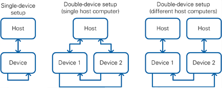
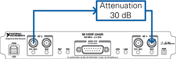
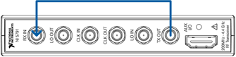
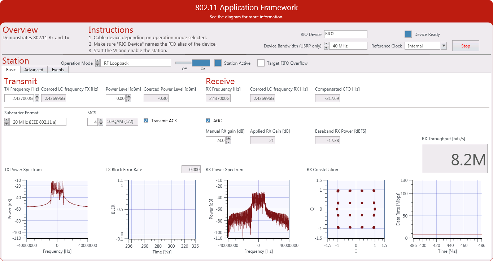
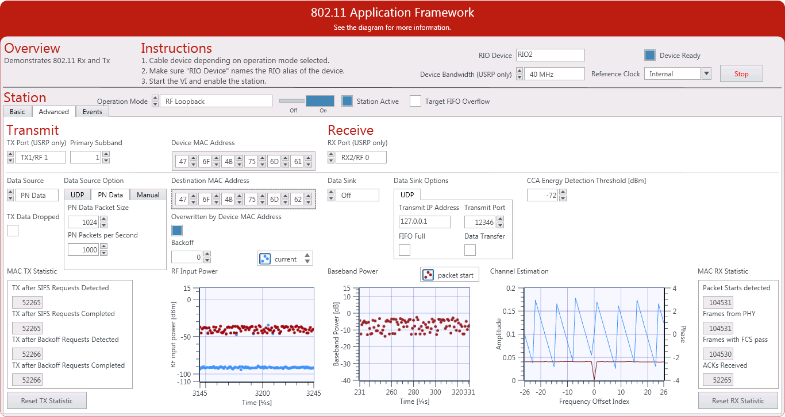
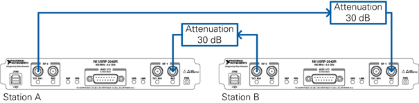
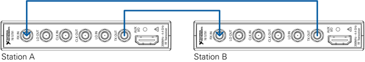
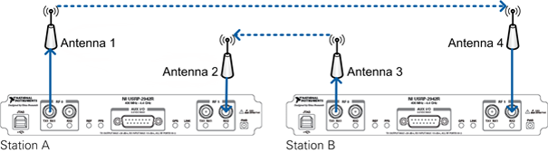
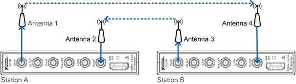

This document provides basic information about how to get started with the 802.11 Application Framework.
Understanding the Components of This Sample Project
Statement of Compliance and Deviations
Configuring the USRP RIO Setup
Additional Operation Modes and Configurations Options
Configuring the NI USRP RIO System
Configuring the FlexRIO System
RF Multi Station Mode: Over-the-Air Transmission
Configuring the NI USRP RIO System
Configuring the FlexRIO/FlexRIO Adapter Module Setup
Additional Configuration Options
To use the 802.11 Application Framework for bidirectional data transmission, you need two NI RF devices, either USRP RIO devices with 40 MHz, 120 MHz, or 160 MHz bandwidth, or FlexRIO modules. The two devices can be connected to either one host computer or several host computers, which can be either a PC or PXI chassis. Special test modes using the loopback functionality provided by the framework can be executed with only one NI USRP device. The setup options are shown in Figure 1.

Figure 1 Hardware Configuration Options
Depending on the chosen configuration, the following hardware is required.
| Configuration | All setups | USRP RIO setup | FlexRIO/FlexRIO adapter module setup | |||||
| Host PC | SMA Cable | Antenna | USRP | Attenuator | MXI adapter | FlexRIO FPGA module | FlexRIO adapter module | |
| Single device, cabled | 1 | 1 | 0 | 1 | 1 | 1 | 1 | 1 |
| Single device, over-the-air [1] | 1 | - | 2 | 1 | - | 1 | 1 | 1 |
| Double device, cabled | 1 | 2 | - | 2 | 2 | 2 | 2 | 2 |
| Double device, over-the-air [1] | 1 | - | 4 | 2 | - | 2 | 2 | 2 |
The preceding recommendations assume you are using PXI-based host systems. You can also use a PC with a PCI-based or PCI Express-based MXI adapter, or a laptop with an Express card-based MXI adapter.
Ensure your host has at least 20 GB of free disk space and 8 GB of RAM. To compile bitfiles for the NI RF device FPGA, your system should be equipped with 16 GB RAM.
| Caution: Before using your hardware, read all product documentation to ensure compliance with safety, EMC, and environmental regulations. | |
| Caution: To ensure the specified EMC performance, operate the RF devices only with shielded cables and accessories. | |
| Caution: To ensure the specified EMC performance, the length of all I/O cables except for those connected to the GPS antenna input of the USRP device must be no longer than 3 m (10 ft). | |
| Caution: The USRP-29xx and NI 5791 RF devices are not approved or licensed for transmission over the air using an antenna. As a result, operating this product with an antenna may violate local laws. Ensure that you are in compliance with all local laws before operating this product with an antenna. |
The project is comprised of LabVIEW host code and LabVIEW FPGA code for the supported NI USRP or FlexRIO hardware targets. The related folder structure and the components of the project are described in the next subsections.
To create a new instance of the 802.11 Application Framework, select Launch a Project » Application Frameworks » 802.11 Design USRP RIO v2.0.1. The following files and folders are created inside the specified folder:
The 802.11 Application Framework provides a real-time orthogonal frequency-division multiplexing (OFDM) physical layer (PHY) and lower media access control (MAC) implementation for an IEEE 802.11-based system. The 802.11 Application Framework LabVIEW project implements the functionality of one station, including receiver (RX) and transmitter (TX) functionality.
The 802.11 Application Framework is designed to be compliant with the IEEE 802.11 specifications. To keep the design easily modifiable, the 802.11 Application Framework focuses on the core functionality of the IEEE 802.11 standard.
The 802.11 Application Framework supports the following features:
Refer to the 802.11 Application Framework white paper for more information about the 802.11 Application Framework design.
This section describes the main steps needed to run the 802.11 Application Framework using the RF loopback operation mode. Other operation modes are described in the Additional Operation Modes and Configurations Options section.
Depending on the configuration, follow the steps in either the Configuring USRP Setup or Configuring FlexRIO/FlexRIO Adapter Module Setup section.

Figure 2 NI USRP Hardware Configuration

Figure 3 FlexRIO Adapter Module Hardware Configuration
Ensure the LabVIEW Communications System Design Suite and the 802.11 Application Framework are installed on your system. Installation is started by running setup.exefrom the provided installation media. Follow the installer prompts to complete the installation process.
The 802.11 Application Framework user interface is shown in Figure 4. All application settings as well as graphs and indicators are described in the following subsections.

Figure 4 Application Framework Basic Tab
Application settings are applied when the VI starts, and cannot be changed once the VI is up and running. To change these settings, stop the VI, apply changes, and restart the VI.
| Parameter | Description |
| RIO Device | The RIO address of the RF hardware device. |
| Reference Clock | Configures the reference for the device clocks. The reference frequency must be 10 MHz. You can choose from the following sources:
Internal – Uses the internal reference clock. REF IN / ClkIn – The reference is taken from the REF IN port (USRP-294xR and USRP-295XR) or the ClkIn port (NI 5791). GPS – The reference is taken from the GPS module. Only applicable for the USRP-2950/2952/2953R devices. PXI_CLK – The reference is taken from the PXI chassis. Only applicable for PXIe-7975R/7976R FlexRIO FPGA targets with NI 5791 adapter modules. |
| USRP Bandwidth | (USRP RIO devices only) Configures the device bandwidth of the USRP RIO device. |
Static runtime settings can only be changed while the station is switched off. The parameters are applied when the station is switched on.
| Parameter | Description |
| Operation Mode | The 802.11 Application Framework provides three kinds of modes:
RF Loopback - Connects the TX path of one device with the RX path of the same device using RF cabling. RF loopback is the default operation mode. RF Multi Station - Regular data transmission with two independent stations running on individual devices connected either with antennas or by cabled connections. Baseband loopback - Similar to RF loopback, but the external cable loopback is replaced by the internal digital baseband loopback path. |
| TX Frequency | Center frequency of the transmitter. Valid values depend on the device the station is running on. |
| Power Level | Output power level considering the transmission of a CW signal that has full DAC range. The high peak-to-average power ratio of OFDM means that the output power of transmitted 802.11 frames is usually 9 dB to 12 dB below the adjusted power level. |
Dynamic Runtime Settings can be changed any time and are applied immediately, even when the station is active.
| Parameter | Description |
| Subcarrier Format | Allows you to switch between IEEE 802.11 standard formats, 802.11a or 802.11ac, and bandwidth settings (20 MHz or 40 MHz). |
| MCS | Modulation and coding scheme index used to encode data frames. ACK frames are always sent with MCS 0. Be aware that not all MCS values are applicable for all subcarrier formats and the meaning of the MCS changes with the subcarrier format. The text field next to the MCS field shows the modulation scheme and coding rate for the current MCS and Subcarrier Format. |
| Transmit ACK | If enabled, ACK frames are transmitted after SIFS = 16 µs in response to successfully received data frames. |
| AGC | If enabled, the optimum gain setting is chosen depending on the received signal power strength. The RX gain value is taken from Manual RX Gain if the AGC has been disabled. |
| Manual RX Gain | Manual RX gain value. Applied if AGC is disabled. |
To monitor the status of the station, the 802.11 Application Framework provides a variety of indicators and graphs.
| Parameter | Description |
| Coerced LO Frequency TX | Actually used TX frequency. |
| Coerced Power Level | Power level a continuous wave of 0 dBFS provides for the current device settings. The average output power of 802.11 signals is approximately 10 dB below this level. Indicates the actual power level considering RF frequency and device-specific calibration values from the EEPROM. |
| RX Frequency | The RX frequency is equal to the TX frequency because 802.11 protocols operate in half-duplex mode. |
| Coerced LO Frequency RX | Actually used RX frequency. |
| Compensated CFO | Carrier frequency offset detected by coarse frequency estimation unit. |
| Applied RX Gain | RX gain value currently applied. This value is the Manual RX Gain when the AGC is disabled, or the calculated RX gain when AGC is enabled. In both cases, the gain value is coerced by the capabilities of the device. |
| Baseband RX Power | Actual receiver's baseband power. When the AGC is enabled, the 802.11 Application Framework attempts to keep this value at -25 dBFS by changing the RX gain accordingly. |
| TX Power Spectrum | A snapshot of the current baseband spectrum from the TX. |
| TX Block Error Rate | Error rate is calculated as a ratio of sent frames versus received ACKs. In addition, the most recent value is displayed on the upper right of the graph. |
| RX Power Spectrum | A snapshot of the current baseband spectrum from the RX. |
| RX Constellation | The I/Q constellation of the received data field. |
| RX Throughput | The data rate of successful received and decoded frames matching the Device MAC address. |
The advanced tab provides access to more elaborate settings and display options.

Figure 5 Application Framework Advanced Tab
| Parameter | Description |
| TX Port | The RF port used for TX (applicable only for NI USRP devices). |
| RX Port | The RF port used for RX (applicable only for NI USRP devices). |
| Channel Selector | Selects the 20 MHz sub-band used for legacy transmissions in IEEE 802.11ac mode. |
| Device MAC Address | MAC address associated with the station. |
| Parameter | Description |
| Data Source | Determines the source of MAC frames send from the host to the target.
UDP - This method is useful for showing demos, such as when using an external video streaming application, or for using external network testing tool, such as Iperf. In this method, input data arrives at or is generated from the 802.11 station using UDP. PN Data - This method sends random bits and is useful for functional tests. Packet size and rate can be easily adapted. Manual - This method is useful to trigger single packets for debugging purposes. |
| Data Source Options | Each tab shows the options for the corresponding data sources.
Receive Port (UDP) - A free UDP port to retrieve data for the transmitter. Usually between 1025 and 65535. PN Data Packet Size (PN Data) - Packet size in bytes (range is limited to 4061, which is a single A-MPDU reduced by MAC overhead) PN Packets per second (PN Data) - Average number of packets to transmit per second (limited to 10,000. The achievable throughput might be less depending on the configuration of the station). |
| Backoff | Fixed backoff that is applied before a frame is transmitted. The backoff is counted in number of slots of 9 µs duration. |
| UDP Data Sink | If enabled, received frames are forwarded to the configured UDP address and port (see below). |
| Transmit IP Address | Destination IP address for the UDP output stream. |
| Transmit Port | Target UDP port for UDP output stream, usually between 1,025 and 65,535. |
| Destination MAC Address | MAC address of the destination to which packets should be sent. If running in loopback mode, this address is ignored, and the Device MAC address is used instead. |
| CCA Energy Detection Threshold | If the energy of the received signal is above the threshold, the station qualifies the medium as busy and interrupts its backoff procedure, if any. |
| Parameter | Comment |
| RF Input Power | Displays the current RF input power in dBm regardless of the type of incoming signal if an 802.11 packet has been detected. This indicator displays the value at the packet start. |
| Baseband Power | Displays the baseband signal power at packet start. |
| Channel Estimation | Amplitude and phase of the estimated channel (based on L-LTF and VHT-LTF). |
| MAC TX Statistics | Number of TX after SIFS/backoff is detected/completed. The number of packets handled by the MAC TX. |
| MAC RX Statistics | Number of frames detected (by the synchronization), received subframes (frames with valid PLCP header), valid subframes (frames without format violations) and received ACKs. |
This chapter describes further configuration options and operation modes to complete once the initial setup as described in the Running This Sample Project section is complete.
In addition to the RF loopback configuration, the 802.11 Application Framework supports interaction with an arbitrary number of stations, hereafter referred to as RF Multi Station Mode. In the Multi Station Mode, each station acts as a single 802.11 device.
The following descriptions assume that a network with two stations is set up. Therefore, two RF devices (either NI USRP or FlexRIO adapter modules) are needed. As described in the Hardware section, you can control the two RF devices in two ways:
The two independent stations, each running on its own RF device, are referred to as station A and station B. Depending on the setup, follow the steps in either the Configuring USRP Setup or Configuring FlexRIO/FlexRIO adapter module Setup section.

Figure 6 Cabled Connection of NI USRP Devices

Figure 7 FlexRIO Adapter Module Cabled Connection
Instructions about running the LabVIEW host code have already been provided in the Running This Sample Project section for the RF Loopback operation mode. In addition to the instructions in that section, also complete the following steps:
If you use a setup in which a single host controls two RF devices, make sure each device is controlled from a separate project to avoid port conflicts.
Over-the-air transmission is similar to the cabled setup. Cables are replaced by antennas suitable for the selected channel center frequency and system bandwidth.
| Caution Read the product documentation for all hardware components, especially the NI RF devices, before using the system.
NI USRP and FlexRIO devices are not approved or licensed for transmission over the air using an antenna. As a result, operating those products with an antenna may violate local laws. Ensure that you are in compliance with all local laws before operating this product with an antenna. |

Figure 8 Antenna Connection for NI USRP Devices

Figure 9 Antenna Connection for FlexRIO/FlexRIO adapter module Devices
Refer to the RF Multi Station Mode: Cabled sections for information about running the host code.
The baseband loopback is similar to RF loopback. In this mode, the RF is bypassed. TX samples are transferred directly to the RX processing chain on the FPGA. No wiring on the device connectors is needed.
You can use the built-in pseudonoise (PN) data generator to create TX data traffic, which is useful for measuring the system throughput performance. The PN data generator is configured by the PN Data Packet Size and PN Packets per Second parameters. The data rate at the output of the PN Data Generator is equal to the product of both parameters. Notice that the actual system throughput seen on RX side depends on the transmission parameters, including the MCS value, and can be lower than the rate generated by the PN data generator.
The following steps provide an example of how the PN data generator can show the impact of the transmission protocol configuration on the achievable throughput. Notice that the given throughput values can be slightly different depending on the actual used hardware platform.
Transmitting videos highlights the capabilities of the 802.11 Application Framework. To perform a video transmission with two devices, set up a configuration as described in the RF Multi Station Mode: Cabled section. The 802.11 Application Framework provides a UDP interface, which is well suited for video streaming. The transmitter and receiver need a video stream application (e.g. VLC which can be downloaded from http://videolan.org ). Any program capable of transmitting UDP data can be used as data source. Similarly, any program capable of receiving UDP data can be used as data sink.
The host acting as receiver utilizes the 802.11 Application Framework to pass received 802.11 data frames and pass them via UDP to the video stream player.
1. Create a new project as described in Running the LabVIEW Host Code and set the correct RIO identifier in the RIO device parameter.
2. Set Operation Mode to RF Multi Station.
3. Switch to Advanced tab and set Data Source to UDP.
4. Enable the Station
5. Start cmd.exe and change to the VLC installation directory
6. Start the VLC application as a streaming client with the following command:
vlc udp://@:12346
The host acting as Transmitter receives UDP packets from the video streaming server and utilizes the 802.11 Application Framework to transmit them as 802.11 data frames.
1. Create a new project as described in Running the LabVIEW Host Code and set the correct RIO identifier in the RIO device parameter.
2. Set Operation Mode to RF Multi Station.
3. Switch to Advanced tab and set Data Source and Data Sink both to UDP.
4. Enable the Station.
5. Start cmd.exe and change to the VLC installation directory
6. Identify the path to a video file that shall be used for streaming.
7. Start the VLC application as a streaming server with the following command
vlc "PATH_TO_VIDEO_FILE"
:sout=#std{access=udp{ttl=1},mux=ts,dst=127.0.0.1:12345}, where PATH_TO_VIDEO_FILE should be replaced with the location of the video that should be used.
The host acting as receiver will display the video streamed by the transmitter.
This section provides information about identifying the root cause of a problem if the system is not working as expected. It is described for a multi station setup (in which station A transmits data packets to station B) but it also applies to the RF loopback mode (in which station A and B are represented by the same device).
For normal operation, the following steps are performed:
The following tables provide information about how to verify normal operation and how to detect typical errors.
| Step 1: Station A is transmitting data packets | |
| Normal Operation | Indication:
|
| Error: No data provided for transmission |
Indication:
Solution:
|
| Error: TX data was dropped because MAC TX considers the medium as busy |
Indication:
Solution:
|
| Error: TX data was dropped because you try to send more data packets than the MAC ca Provide to the PHY |
Indication:
Solution:
|
| Step 2: Station B is receiving data packets | |
| Normal Operation | Indication:
|
| Error: wrong RF ports |
Indication:
Solution:
|
| Step 3: Station B is transmitting ACK packets | |
| Normal Operation | Indication:
|
| Error: ACK transmission is disabled |
Indication:
Solution:
|
| Error: MAC address mismatch |
Indication:
Solution:
|
| Step 4: Station A is receiving ACK packets | |
| Normal Operation | Indication:
|
Make sure the USRP device is already running and connected to the host before the host is started. Otherwise the NI USRP device may not properly recognized by the host.
A complete list of issues and workarounds is located on the National Instruments website .
NI USRP and LabVIEW Communications System Design Suite Getting Started Guide
IEEE Standards Association: 802.11 Wireless LANs
Refer to the LabVIEW Communications System Design Suite Manual, available online, for information about LabVIEW concepts or objects used in this sample project.
You also can use the Context Help window to learn basic information about LabVIEW objects as you move the cursor over each object. To display the Context Help window in LabVIEW, select View»Context Help.
Copyright
© 2015-2016 National Instruments. All rights reserved.
Under the copyright laws, this publication may not be reproduced or transmitted in any form, electronic or mechanical, including photocopying, recording, storing in an information retrieval system, or translating, in whole or in part, without the prior written consent of National Instruments Corporation.
National Instruments respects the intellectual property of others, and we ask our users to do the same. NI software is protected by copyright and other intellectual property laws. Where NI software may be used to reproduce software or other materials belonging to others, you may use NI software only to reproduce materials that you may reproduce in accordance with the terms of any applicable license or other legal restriction.
End-User License Agreements and Third-Party Legal Notices
You can find end-user license agreements (EULAs) and third-party legal notices in the following locations after installation:
Notices are located in the %ProgramFiles(x86)%\National Instruments\_Legal Information and %ProgramFiles(x86)%\National Instruments directories.
EULAs are located in the %ProgramFiles(x86)%\National Instruments\Shared\MDF\Legal\license directory.
Review %ProgramFiles(x86)%\National Instruments\_Legal Information.txt for information on including legal information in installers built with NI products.
U.S. Government Restricted Rights
If you are an agency, department, or other entity of the United States Government ("Government"), the use, duplication, reproduction, release, modification, disclosure or transfer of the technical data included in this manual is governed by the Restricted Rights provisions under Federal Acquisition Regulation 52.227-14 for civilian agencies and Defense Federal Acquisition Regulation Supplement Section 252.227-7014 and 252.227-7015 for military agencies.
Trademarks
Refer to the NI Trademarks and Logo Guidelines at ni.com/trademarks for information on National Instruments trademarks. Other product and company names mentioned herein are trademarks or trade names of their respective companies.
Patents
For patents covering the National Instruments products/technology, refer to the appropriate location: Help»Patents in your software, the patents.txt file on your media, or the National Instruments Patent Notice at ni.com/patents .
| Abbreviation | Meaning |
| ACK | Acknowledgement |
| ADC | Analog Digital Converter |
| AGC | Automatic Gain Control |
| A-MPDU | Aggregated MPDU |
| BLER | Block Error Rate |
| BW | Bandwidth |
| CCA | Clear Channel Assessment |
| CW | Continuous Wave |
| DAC | Digital Analog Converter |
| FlexRIO adapter module | Frontend Adapter Module (RF module) |
| H2T | Host to Target |
| NACK | Negative Acknowledgement |
| MAC | Medium Access Control Layer |
| MCS | Modulation and Coding Scheme |
| MPDU | MAC PDU |
| OFDM | Orthogonal Frequency-Division Multiplexing |
| PDU | Protocol Data Unit |
| PHY | Physical Layer |
| PLCP | PHY Layer Convergence Protocol |
| PN | Pseudo Noise |
| QAM | Quadrature Amplitude Modulation |
| RF | Radio Frequency |
| RX | Receive |
| SIFS | Short Interframe Spacing |
| SISO | Single Input Single Output |
| T2H | Target to Host |
| TX | Transmit |
| UDP | User Datagram Protocol |
| VHT | Very High Throughput |
[1] If you are transmitting over the air, make sure to consider the instructions given in the RF Multi Station Mode: Over-the-Air Transmission section. The USRP-29xx and NI 5791 are not approved or licensed for transmission over the air using an antenna. As a result, operating those products with an antenna may violate local laws.
376779A-01